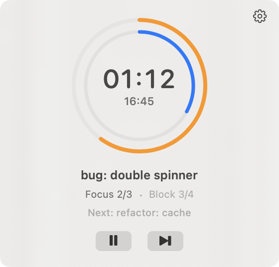
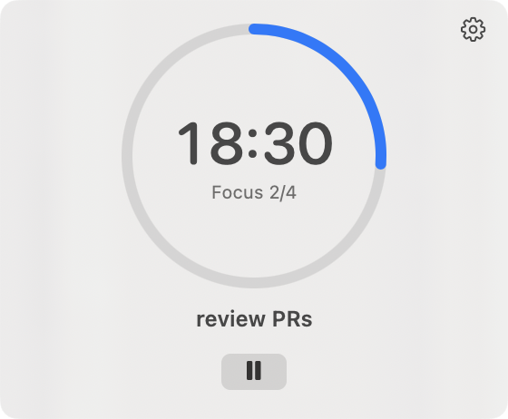

A tomato-free*Though the Pomodoro technique works well for me, I've never liked tomatoes very much. They are the fruit of an otherwise toxic nightshade plant, you know. focus timer
for your macOS menu bar.
No dock icon. No window clutter. Just focus.
Built for focus, nothing else.
Menu Bar Native
Lives in your menu bar where it belongs. A clean popover with timer display and controls. No dock icon stealing your attention.
Slices
Slice your focus across multiple agents. Cycle between them in timed rotations, unblock each one, advance when ready. Purpose-built for agentic workflows.
Global Hotkeys
Ctrl+Shift+Z toggles the popover from anywhere. Ctrl+Shift+Return advances your rotation. Fully configurable. Hands on keyboard, always.
Configurable Timers
25-minute focus blocks, 5-minute short breaks, 25-minute long breaks. Change every duration to match your rhythm. Set how many blocks before a long break.
Notification Sounds
Calm, Chord, Taptap, and more: pleasant sounds from akx/Notifications. Different sounds for focus end, break end, and micro-rotation transitions. Or turn them all off.
Smart Automation
Auto-advance between phases. Auto-pop the popover when a phase completes. Save rotation lists for Slices. Set it and forget it.
Built for the age of agents.
Context switching is expensive. Task loading is real. But when you're managing three agents in parallel, the cost of not checking in is higher: stalled agents, lost momentum, compounding delays.
Slices gives you structure. Set up a rotation list for your active workstreams. The timer cycles you through each one in short intervals: check in, unblock, advance. No decision fatigue about what to look at next. No forgetting which agent you haven't touched in 20 minutes.
For deep solo work, use regular focus blocks. Slices is for when you're the bottleneck across multiple parallel tasks and you need to keep everything moving.


Clean, focused interface.
A circular progress ring with countdown display. Play, pause, skip, reset. Everything you need, nothing you don't. The popover appears on click or hotkey and disappears when you click away.
- Circular progress ring with countdown
- Phase indicator (Focus, Short Break, Long Break)
- Block counter shows progress through your session
- Name your focus session for context
- Auto-pop on phase completion
Free as in yours.
Zenza Pomodori is GPL-3.0 open source. Read the code, fork it, build it yourself. No telemetry, no analytics, no nonsense.